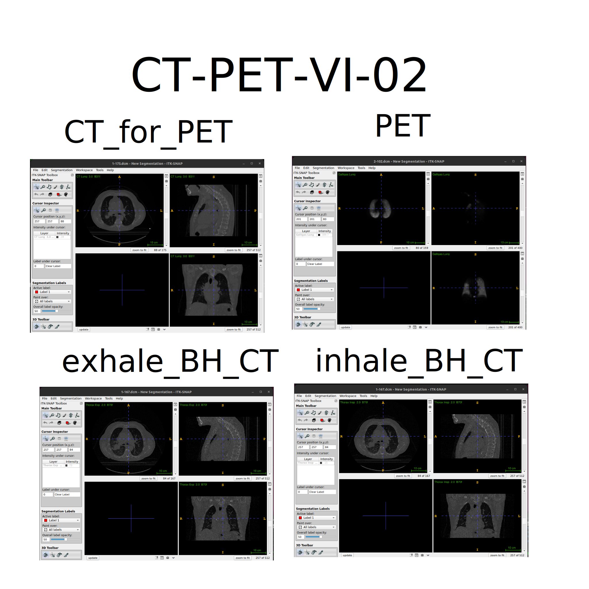

Content from A Practical Introduction to Working with Medical Image Data
Last updated on 2024-09-04 | Edit this page
Estimated time: 12 minutes
Overview
Questions
- How can we visualize volumetric data?
- How do locations in an image get mapped to real-world coordinates?
- How can we register different types of images together using ITK-SNAP?
Objectives
- Describe the structure of medical imaging data and popular formats (DICOM and NifTi)
- Discover and display medical imaging data in ITK-SNAP
- Demonstrate how to convert between different medical image formats
- Inspecting the NifTi header with
nibabel - Manipulate image data (cropping images) with
nibabeland learn how it is displayed on screen with ITK-SNAP
Medical Imaging Data
The Cancer Imaging Archive (TCIA)
In these exercises we will be working with real-world medical imaging
data from the Cancer Imaging Archive (TCIA).
TCIA is a resource of public datasets hosts a large archive of medical
images of cancer accessible for public download.
We are using CT Ventilation as a Functional Imaging Modality for Lung
Cancer Radiotherapy (also known as
CT-vs-PET-Ventilation-Imaging dataset) from TCIA. The
CT-vs-PET-Ventilation-Imaging collection is distributed under the
Creative Commons Attribution 4.0 International License (https://creativecommons.org/licenses/by/4.0/). The
CT-vs-PET-Ventilation-Imaging dataset contains 20 lung
cancer patients underwent exhale/inhale breath hold CT (BHCT),
free-breathing four-dimensional CT (4DCT) and Galligas PET ventilation
scans in a single session on a combined 4DPET/CT scanner.
We recommend using the BHCT scans for participants
CT-PET-VI-02 and CT-PET-VI-03 showing very
little motion between inhale and exhale (for PET scan and accompanying
CT scan), and BHCT scans for participants CT-PET-VI-05 and
CT-PET-VI-07 (the inhale and exhale CT scans), where 05 has
a different number of slices between the inhale and exhale.
Data paths contain: (A) inhale_BH_CT and
exhale_BH_CT contain CT scans acquired during an inhalation
breath hold and exhalation breath hold respectively, (B)
PET contains a PET scan that measures the local lung
function, and (C) CT_for_PET contains a CT scan acquired at
the same time as the PET scan for attenuation correction of the PET scan
and to provide anatomical reference for the PET data.
- CT-PET-VI-02
- CT-PET-VI-03
- CT-PET-VI-05
BASH
CT-PET-VI-05$ tree -d
.
├── CT-PET-VI-05
│ ├── CT_for_PET
│ ├── exhale_BH_CT
│ ├── inhale_BH_CT
│ └── PET- CT-PET-VI-07
For example, datasets in ITK-SNAP are illustrated in the following figures. 
Refer to Summary and Setup
section for further details on CT-vs-PET-Ventilation-Imaging
dataset.
- Data may require extensive cleaning and pre-processing before it is suitable to be used.
- When using open datasets that contain images of humans, such as those from TCIA, for your own research, you will still need to get ethical approval as you do for any non-open datasets you use). This can usually be obtained from the local ethics committee (both Medical Physics and Computer Science have their own local ethics committee) or from UCL central ethics if your department does not have one.
- Although there are many formats that medical imaging data can come in, we are going to focus on DICOM and NifTi as they are two of the most common formats. Most data that comes from a hospital will be in DICOM format, whereas NifTi is a very popular format in the medical image analysis community.
DICOM format
Digital Imaging and Communications in Medicine (DICOM) is a technical standard for the digital storage and transmission of medical images and related information. While DICOM images typically have a separate file for every slice, more modern DICOM images can come with all slices in a single file.
If you look at the data CT-PET-VI-02/CT_for_PET you will
see there are 175 individual files corresponding to 175 slices in the
volume. In addition to the image data for each slice, each file contains
a header which can contain an extensive amount of extra information
relating to the scan and subject.
In a clinical setting this will include patient identifiable information such as their name, address, and other relevant details. Such information should be removed before the data is transferred from the clinical network for use in research. If you ever discover patient identifiable information in the header of data you are using you should immediately alert your supervisor, manager or collaborator
The majority of the information in the DICOM header is not directly
useful for typical image processing and analysis tasks. Furthermore,
there are complicated ‘links’ (provided by unique identifiers, UIDs)
between the DICOM headers of different files belonging to the same scan
or subject. Together with DICOM routinely storing each slice as a
separate files, it makes processing an entire imaging volume stored as
DICOM format rather cumbersome, and the extra housekeeping required
could lead to a greater chance of an error being made. Therefore, a
common first step of any image processing pipeline is to convert the
DICOM image to a more suitable format such as NifTi.
Generally, most conversions go from DICOM to NIfTI. There are scenarios
when you might want to convert from NIfTI back to
DICOM, for example, if you need to import them into a clinical system
that only works with DICOM.
Converting images back to DICOM such that they are correctly interpreted by a clinical system can be very tricky and requires a good understanding of the DICOM standard. More information on the DICOM standard can be found here: https://www.dicomstandard.org
NifTi format
The Neuroimaging Informatics Technology Initiative (NIfTI) image format are usually stored as a single file containing the imaging data and header information. While the NifTI file format was originally developed by the neuroimaging community it is not specific to neuroimaging and is now widely used for many different medical imaging applications outside of the brain. During these exercises you will learn about some of the key information stored in the NifTi header.
NifTI files can also store the header and image data in separate files but this is not very common. For more information, please see Anderson Winkler’s blog on the NIfTI-1 andNIfTI-2 formats.
Visualisation of volumetric data with ITK-SNAP
Getting Started with ITK-SNAP
Introduction
ITK-SNAP started in 1999 with SNAP (SNake Automatic Partitioning) and
developed by Paul Yushkevich with the guidance of Guido Gerig. ITK-SNAP
is open-source software distributed under the GNU General Public
License. ITK-SNAP is written in C++ and it leverages the Insight
Segmentation and Registration Toolkit (ITK) library. See
Summary and Setup section for requirements and installation
of ITK-SNAP
ITK-SNAP application
ITK-SNAP application shows three orthogonal slices and a fourth window for three-dimensional view segmentation.
Viewing and understanding DICOM data
We are using CT Lung DICOM dataset from
CT-PET-VI-02/CT_for_PET, containing 175 dicom items and
totalling 92.4 MB.
Opening and Viewing DICOM images
- Open ITK-SNAP application
-
Load inhale scan using file browser
- Open the itk-snap application. If you have used it before it will display recent images when you open it, and you can select one of these to open it.
Next. You will then be asked to Select DICOM series to open, but as this folder only includes one series you can just clickNext. ClickFinish
Navigating DICOM images
- Navigate around image, see intensity value, and adjust intensity window
- To navigate around the image, i.e. change the displayed slices, you can left clicking in the displayed slices, using the mouse wheel, or the slider next to the displayed slices.
- To zoom, you can use the right mouse button (or control + button 1), and pan using the centre mouse button (or alt + button 1).
Handling multiple DICOM images
We provide instructions for handling multiple DICOM images, applying
overlays, viewing image information, and using color maps in ITK-SNAP.
For this exmaple, we are using CT-PET-VI-02/inhale_BH_CT
and CT-PET-VI-02/exhale_BH_CT dicoms.
Load additional image using exhale_BH_CT scan by drag
and drop
- Images can also be opened by simply dragging them on to the ITK-SNAP
window. In a file explorer (Finder in Mac) go to the
exhale_BH_CTfolder and drag any of the dicom files on to the itksnap window. A small window will pop up asking What should itksnap do with this image? If you select Load as Main Image it will replace the current image. Instead select Load as Additional Image - this will enable easy comparison of the two images.
Using thumbnails to see image differences
- Once the second image is loaded you will see two thumbnails in the top corner of each slice display
- Click on these to swap the displayed slices from one image to the other - this will enable you to easily see the similarities and differences between the images.
- You will also see that both images now appear in the Cursor Inspector, where you can see the intensity value at the cursor for both images.
- You can also change the displayed image by clicking on it in the Cursor Inspector
inhale_BH_CT and exhale_BH_CT for
CT-PET-VI-02)Colour overlay
In some cases you may want to display an image as a colour overlay on top of another image, e.g. displaying a PET image overlaid on the corresponding CT.
Colour overlay as a separate image (shown besides other images)
-
Load Primary Image:
- Open your primary DICOM series of the
CT-PET-VI-02/CT_for_PETimage either using the drag and drop method orFile->Open Imageas described above. - Make sure File Format is DICOM Image Series.
- This time select Load as Main Image. This will load in the new image replacing the two that were previously loaded.
- Open your primary DICOM series of the
-
Load Overlay Image:
- Load the
CT-PET-VI-02/PETimage either using the drag and drop method orFile->Open Image
- Load the
Colour overlay as a semi-transparent overlay (shown on the top of other images)
-
Load Primary Image:
- Open your primary DICOM series of the
CT-PET-VI-02/CT_for_PETimage either using the drag and drop method orFile->Open Imageas described above. - Make sure File Format is DICOM Image Series.
- Select Load as Main Image.
- Open your primary DICOM series of the
-
Load Overlay Image:
- Load the
CT-PET-VI-02/PETimage either using the drag and drop method orFile->Open Image - When the image has loaded select As a semi-transparent overlay. You
can also set the overlay color map here - select
Hotfrom the drop-down menu and click Next. - The image summary will then be displayed, along with a warning about possible loss of precision (which can be ignored). Click Finish
- Load the
Layer inspector tools
Load
CT-PET-VI-02/CT_for_PETandCT-PET-VI-02/PETscan datasets, using hot semi-transparency (as shown above).Go to
Tools->Layer Inspector. This opens the Image Layer Inspector window. You will see the two images on the left, and five tabs along the top of the window.PET image appears in Cursor Inspector (called Galligas Lung) in italic and CT image as CT Lung in bold.
-
The General tab displays the filename and the nickname for the selected image.
- The Nickname can be edited. For the PET image the general tab also displays a slider to set the opacity, and the option to display it as a separate image or semi-transparent overlay.
- The Contrast tab enables you to adjust how the image intensities are displayed for the different images, e.g. Select the lung image and set the maximum value to 1000 (push enter after typing the number) and this will make the structures in the lung easier to see.
-
The color map tab can be used to select and
manipulate the colour map
- One of the key elements of an imaging viewer is to provide different means to map those values into grey scales or different colors.
- We will show you how to apply different color maps or lookup tables to your data and how this affects how the images are presented to the user.
Load the Image: - Open the desired DICOM series.
Open Color Map Settings: - Go to
Tools>Color Maps Editor.Apply and Adjust Color Map: - Choose a predefined color map from the list. You might also create a customised map. - Adjust the intensity and transparency settings as needed to enhance the visualisation of the images.
-
The info tab displays the Image Header information
for the images and also gives the Cursor Coordinates in both Voxel and
World units.
- A dialog box will appear displaying metadata and other relevant information about the loaded DICOM images (e.g. values for image header and cursor coordinates).
- If you look at the info tab for both the CT image and PET image you will see that the header information for the images is different, and the cursor coordinates in voxel units for the PET image are not whole numbers.
- This is because the displayed slices are from the main (CT) image, and the overlaid (PET) image slices are interpolated at the corresponding locations.
- The metadata tab contains (some of) the information from the DICOM header of the images
Converting DICOM images to NifTi
As mentioned earlier in the exercise, the NIfTI image format tends to be much easier to work with when processing and analysing medical image data. We will now work on converting DICOM images to a NIfTI image volume.
Using ITK-SNAP
In the ITK-SNAP application, save the file by clicking ‘File’ –> ‘Save image’ –> rename image and choose format as ‘NiFTI’.
You might get this error
Error: exception occurred during image IO. Exception: std::expedition
to which we suggest using dicom2nifti library.
Using dicom2nifti
- Open terminal, activate
mirVEenvironment and run python
- Run the following commands to convert your DICOM scans to nifti format.
PYTHON
from pathlib import Path
import dicom2nifti
dicom_path = Path("CT_for_PET")
dicom2nifti.convert_directory(dicom_path, ".", compression=True, reorient=True)
pet_dicom_path = Path("PET")
dicom2nifti.convert_directory(pet_dicom_path, ".", compression=True, reorient=True)Creating the following files:
`3_ct_lung__30__b31f.nii.gz` [47M] and renamed as `ct_for_pet.nii.gz`
`4_galligas_lung.nii.gz` [12M] and renamed as `pet.nii.gz`Using others packages
You might also be interested to look other packages: * https://github.com/rordenlab/dcm2niix * https://nipy.org/nibabel/dicom/dicom.html#dicom * https://neuroimaging-cookbook.github.io/recipes/dcm2nii_recipe/
Viewing and understanding the NifTi header with NiBabel
We are going to use the python package NiBabel to upload
NifTI images and learn some basic properties of the image
using Nibabel. nibabel
api provides various image utilities, conversions methods, helpers.
We recommend to checking documentation for
further deatils on using nibabel library. Please see instructions
to install NiBabel package and other dependecies.
Loading images
- Open terminal, activate
mirVEenvironment and run python
- Importing python packages under
*/episodespath
A NifTi image with extension *.nii.gz can be read using
nibabel’s load function.
PYTHON
import numpy as np
import nibabel as nib
import matplotlib.pyplot as plt
nii3ct = nib.load("data/ct_for_pet.nii.gz")`NiBabel`'s `load` function does not actually read the image data itself from disk, but
does read and interpret the header, and provides functions for accessing the image data.
Calling these functions reads the data from disk (unless it has already been read, in which
case it may be cached in memory already.-
NifTIobject type, shape/size The Nifti1Image object allows us to see the size/shape of the image and its data type.
- Affine transform, mapping from voxel space to world space There are
two common ways of specifying the affine transformation mapping from
voxel coordinates to world coordinates in the nifti header, called the
sformand the `qform’. Another transformation is that neither the sform or qform is used the mapping is performed based just on the voxel dimensions. The sform directly stores the affine transformation in the header whereas the qform stores the affine transformation using quaternions.
We strongly advise always using the sform over the
qform, as: * It is easier to understand (at least for
instructors). * It can contain shears which cannot be represented using
the qform.
Header features
- Printing
nii3ct.headeroutputs
PYTHON
print(nii3ct.header)
#<class 'nibabel.nifti1.Nifti1Header'> object, endian='<'
#sizeof_hdr : 348
#data_type : b''
#db_name : b''
#extents : 0
#session_error : 0
#regular : b''
#dim_info : 0
#dim : [ 3 512 512 175 1 1 1 1]
#intent_p1 : 0.0
#intent_p2 : 0.0
#intent_p3 : 0.0
#intent_code : none
#datatype : int16
#bitpix : 16
#slice_start : 0
#pixdim : [-1. 0.9765625 0.9765625 2. 1. 1.
# 1. 1. ]
#vox_offset : 0.0
#scl_slope : nan
#scl_inter : nan
#slice_end : 0
#slice_code : unknown
#xyzt_units : 2
#cal_max : 0.0
#cal_min : 0.0
#slice_duration : 0.0
#toffset : 0.0
#glmax : 0
#glmin : 0
#descrip : b''
#aux_file : b''
#qform_code : unknown
#sform_code : aligned
#quatern_b : 0.0
#quatern_c : 1.0
#quatern_d : 0.0
#qoffset_x : 249.51172
#qoffset_y : -33.01172
#qoffset_z : -553.5
#srow_x : [ -0.9765625 0. 0. 249.51172 ]
#srow_y : [ -0. 0.9765625 0. -33.01172 ]
#srow_z : [ 0. -0. 2. -553.5]
#intent_name : b''
#magic : b'n+1'sformtransformation matrix You can see that thesformis stored in thesrow_x,srow_y, andsrow_zfields of the header. These specify the top three rows of a 4x4 matrix representing an affine transformation using homogeneous coordinates. The fourth row is not stored as it is always[0 0 0 1]. You will notice that the sform matrix matches the affine transform in theNifti1Imageobject.sform_codeandqform_codeIt can also be seen from thesform_codeandqform_codethat both the sform and qform are set for this image. There are 5 different sform/qform codes defined:
| Code | Label | Meaning |
|---|---|---|
| 0 | unknown | sform not defined |
| 1 | scanner | RAS+ is scanner coordinates |
| 2 | aligned | RAS+ aligned to some other scan |
| 3 | talairach | RAS+ in Talairach atlas space |
| 4 | mni | RAS+ in MNI atlas space |
But for most purposes all that matters is whether the code is unknown (numerical value 0) or one of the other valid values. If the code is unknown then the sform/qform is not specified (and any values provided in the sform/qform fields of the header will be ignored). For any other valid values the sform/qform is specified and the affine transform will be determined from the corresponding header values.
qform transform
You can also see qform transform using the
get_qform function, which returns the affine matrix
represented by the qform:
PYTHON
print(nii3ct.get_qform())
#[[ -0.9765625 0. 0. 249.51171875]
# [ 0. 0.9765625 0. -33.01171875]
# [ 0. 0. 2. -553.5 ]
# [ 0. 0. 0. 1. ]]However, the nifti format does not require that the sform and qform
specify the same matrix. It is also not well defined what should be done
when they are both provided and are different from each other. Often the
qform is simply ignored and the sform is used,
so the general advice is to only use the sform and set the
qform to unknown to avoid any confusion.
Coordinate system
LPS
The original DICOM images assume the world coordinate system is LPS (i.e. values increase when moving to the left, posterior, and superior). See this helpful information on DICOM orientations, and determine if you obtained a similar affine transform from the DICOM headers. The values in the first two rows corresponding to the x and y dimensions would be the negative of those in the NifTi header.
RAS
You will notice that the diagonal elements of the affine matrix match the voxel dimensions (as the affine matrix does not contain any rotations), but the values for the x and y dimensions are negative. This is because the voxel indices increase as you move to the left and posterior of the image/patient, but the nifti format assumes a RAS world coordinate system (i.e. the values increase as you move to the right and anterior of the patient). Therefore, the world coordinates decrease as the voxel indices increase.
ITK-SNAP visualisation coordinate system
ITK-SNAP provides the option, Tools>Reorient Image,
to set image orientation using three-letter code (RAI
code), describing the image rows, columns, and slice map to the
anatomical coordinates. For example, the code ASL means
that image rows (X) run from Anterior to
Posterior, image columns (Y) run from
Superior to Inferior, and images
slices (Z) run from Left to Right.
Modifying NifTi images and headers with Nibabel
Obtaining image pixel data
The image data for a Nifti1Image object can be accessed using the
get_fdata function. This will load the data from disk and
cast it to float64 type before returning the data as a
numpy array.
PYTHON
image_data=nii3ct.get_fdata()
print(type(image_data))
#<class 'numpy.ndarray'>
print(image_data.dtype, image_data.shape)
#float64 (512, 512, 175)You can also plot a particular slide, (e.g. 140) for such data.
Using float64 data type
Casting image data to float64 prevents any integer-related errors and
problems in downstream processing when using the data read by NiBabel.
However, this does not change the type of the image stored on disk,
which as we have seen is int16 for this image, and this could still lead
to downstream errors or unexpected behaviour for any processing that
works directly on the images stored on disk. We are going to convert the
image saved on disk to a floating point image, using the
set_data_dtype function to set the data type to float32.
Essentially, we are going to use 32 bit rather than 64 bit floating
point, as this is usually sufficiently accurate.
We are also going to set the qform to
unknown, updating the corresponding fields in the header.
We use the set_qform function to set the qform
code. To just set the code and not modify the other qform
values in the header, the first input should be None. It is
not necessary to modify the other qform values as they
should be ignored when the code is set to unknown.
The floating point image can now be written to disk using the save function.
Setting the data type for the Nifti1Image object tells it which type to use when writing the image data to disk.
16-bit integers vs 32 bit floats
The file size of ct_for_pet_float32.nii.gz is larger
than ct_for_pet.nii.gz (61 MB, 47 MB, respectively) because
of the conversion from 16 bit integers to 32 bit floats. Both images are
compressed, but the compression is more efficient for the floating point
image: while a 32-bit floating point variable is twice the size of a
16-bit integer, the floating image is less than double the size of the
original integer image.
- int16
PYTHON
print(nii3ct_int16.header)
#<class 'nibabel.nifti1.Nifti1Header'> object, endian='<'
#sizeof_hdr : 348
#data_type : b''
#db_name : b''
#extents : 0
#session_error : 0
#regular : b''
#dim_info : 0
#dim : [ 3 512 512 175 1 1 1 1]
#intent_p1 : 0.0
#intent_p2 : 0.0
#intent_p3 : 0.0
#intent_code : none
#datatype : int16
#bitpix : 16
#slice_start : 0
#pixdim : [-1. 0.9765625 0.9765625 2. 1. 1.
# 1. 1. ]
#vox_offset : 0.0
#scl_slope : nan
#scl_inter : nan
#slice_end : 0
#slice_code : unknown
#xyzt_units : 2
#cal_max : 0.0
#cal_min : 0.0
#slice_duration : 0.0
#toffset : 0.0
#glmax : 0
#glmin : 0
#descrip : b''
#aux_file : b''
#qform_code : unknown
#sform_code : aligned
#quatern_b : 0.0
#quatern_c : 1.0
#quatern_d : 0.0
#qoffset_x : 249.51172
#qoffset_y : -33.01172
#qoffset_z : -553.5
#srow_x : [ -0.9765625 0. 0. 249.51172 ]
#srow_y : [ -0. 0.9765625 0. -33.01172 ]
#srow_z : [ 0. -0. 2. -553.5]
#intent_name : b''
#magic : b'n+1'- float32
PYTHON
print(nii3ct_float32.header)
#<class 'nibabel.nifti1.Nifti1Header'> object, endian='<'
#sizeof_hdr : 348
#data_type : b''
#db_name : b''
#extents : 0
#session_error : 0
#regular : b''
#dim_info : 0
#dim : [ 3 512 512 175 1 1 1 1]
#intent_p1 : 0.0
#intent_p2 : 0.0
#intent_p3 : 0.0
#intent_code : none
#datatype : float32
#bitpix : 32
#slice_start : 0
#pixdim : [-1. 0.9765625 0.9765625 2. 1. 1.
# 1. 1. ]
#vox_offset : 0.0
#scl_slope : nan
#scl_inter : nan
#slice_end : 0
#slice_code : unknown
#xyzt_units : 2
#cal_max : 0.0
#cal_min : 0.0
#slice_duration : 0.0
#toffset : 0.0
#glmax : 0
#glmin : 0
#descrip : b''
#aux_file : b''
#qform_code : unknown
#sform_code : aligned
#quatern_b : 0.0
#quatern_c : 1.0
#quatern_d : 0.0
#qoffset_x : 249.51172
#qoffset_y : -33.01172
#qoffset_z : -553.5
#srow_x : [ -0.9765625 0. 0. 249.51172 ]
#srow_y : [ -0. 0.9765625 0. -33.01172 ]
#srow_z : [ 0. -0. 2. -553.5]
#intent_name : b''
#magic : b'n+1'Cropping data
Cropping data might often contain background voxels which can be useful in some instances but might take up valuable RAM memory, especially for large images. We are going to crop the image from slice 103 to slice 381 in the x dimension (Sagittal slices) and from slice 160 to 340 in the y dimension (Coronal slices). Use ITK-SNAP to confirm that cropping the image to these slices will only remove slices that do not contain the patient.
It is not possible to change the image data in a Nifti1Image object, e.g. to use a smaller array corresponding to a cropped image. Therefore, if you want to modify the image data you need to create a new array with the modified data, then create a new Nifti1Image object using this new array which is used to save the modified image to disk.
- Read the image data from disk using
get_fdataand then create a new array containing a copy of the desired slices:
PYTHON
nii3ct_float32 = nib.load("data/ct_for_pet_float32.nii.gz")
nii3ct_float32.set_data_dtype(np.float32)
print(nii3ct_float32.get_data_dtype())
#float32PYTHON
image_data=nii3ct_float32.get_fdata()
print(image_data.dtype, image_data.shape)
#float64 (512, 512, 175)PYTHON
image_data_cropped = image_data[103:381,160:340,:].copy()
#x[sagittal], y[coronal], z[axial] #voxel unitsIt is important to create a copy of the data (using the copy function, as show above). Otherwise the new image will reference the data in the original image, and if you make any changes to the values in the new image they will also be changed in the original image.
When creating a new Nifti1Image object you can provide an affine transform and/or a Nifti1Header object (e.g. nii_1.header). When you just provide an affine, a default header is created with the sform set according to the provided affine transform and the qform set to unknown. When you provide a header, the values in it will be copied into the header for the new image, except that the dim values will be updated based on the image data provided. If you provide an affine as well as a header, and the affine is different to the sform or qform in the header they will be set to the provided affine and unknown respectively. If the affine is not provided, it is not set from the header but left empty. So, if any of your downstream processing will make use of the affine, make sure you manually set it from the header either when creating the Nifti1Image object or by calling the set_sform or set_qform functions for the object (which update the affine as well as setting the sform/qform). Here we will provide a Nifti1Header object as we want the header for the new image to based on the uncropped image and will use the sform from the header as the affine for the new Nifti1Image.
PYTHON
nii3ct_float32_cropped = nib.nifti1.Nifti1Image(image_data_cropped, nii3ct_float32.get_sform(), nii3ct_float32.header)
nii3ct_float32_cropped.shape
#(278, 180, 175)PYTHON
print(nii3ct_float32_cropped.header)
#<class 'nibabel.nifti1.Nifti1Header'> object, endian='<'
#sizeof_hdr : 348
#data_type : b''
#db_name : b''
#extents : 0
#session_error : 0
#regular : b''
#dim_info : 0
#dim : [ 3 278 180 175 1 1 1 1]
#intent_p1 : 0.0
#intent_p2 : 0.0
#intent_p3 : 0.0
#intent_code : none
#datatype : float32
#bitpix : 32
#slice_start : 0
#pixdim : [-1. 0.9765625 0.9765625 2. 1. 1.
# 1. 1. ]
#vox_offset : 0.0
#scl_slope : nan
#scl_inter : nan
#slice_end : 0
#slice_code : unknown
#xyzt_units : 2
#cal_max : 0.0
#cal_min : 0.0
#slice_duration : 0.0
#toffset : 0.0
#glmax : 0
#glmin : 0
#descrip : b''
#aux_file : b''
#qform_code : unknown
#sform_code : aligned
#quatern_b : 0.0
#quatern_c : 1.0
#quatern_d : 0.0
#qoffset_x : 249.51172
#qoffset_y : -33.01172
#qoffset_z : -553.5
#srow_x : [ -0.9765625 0. 0. 249.51172 ]
#srow_y : [ -0. 0.9765625 0. -33.01172 ]
#srow_z : [ 0. -0. 2. -553.5]
#intent_name : b''
#magic : b'n+1'The cropped image can now be saved using Nibabel’s save function.
Now load the cropped image into ITK-SNAP. You will see that the image has been cropped in the x and y dimensions as expected, but it is shifted relative to the uncropped image:
This is because we did not update the origin/offset in the nifti header to account for the slices we removed. The origin gives the world coordinates of the voxel (0, 0, 0). So, if we want the images to remain aligned, we need to set the origin for the cropped image to be the same as the world coordinates of voxel (103, 160, 0) in the uncropped image. This can be calculated using the affine from the uncropped image, and used to create a new affine matrix with this as the origin (the origin is the top 3 values in the 4th column of the matrix). The new affine matrix can then be used to set the sform (which also sets the affine) for the cropped image, which can then be saved.
PYTHON
cropped_origin = nii3ct_float32.affine@np.array([103,160,0,1])
cropped_origin
#array([ 148.92578125, 123.23828125, -553.5 , 1. ])PYTHON
aff_mat_cropped = nii3ct_float32_cropped.get_sform()
print(aff_mat_cropped)
#[[ -0.9765625 0. 0. 249.51171875]
# [ -0. 0.9765625 0. -33.01171875]
# [ 0. -0. 2. -553.5 ]
# [ 0. 0. 0. 1. ]]PYTHON
aff_mat_cropped[:, 3] = cropped_origin
print(aff_mat_cropped)
#[[ -0.9765625 0. 0. 148.92578125]
# [ -0. 0.9765625 0. 123.23828125]
# [ 0. -0. 2. -553.5 ]
# [ 0. 0. 0. 1. ]]Note, NiBabel provides handy functionality for slicing nifti images and updating the affine transforms and header accordingly using the slicer attribute:
PYTHON
nii3ct_float32_cropped.set_sform(aff_mat_cropped)
nii3ct_float32_cropped.affine
#array([[ -0.9765625 , 0. , 0. , 148.92578125],
# [ -0. , 0.9765625 , 0. , 123.23828125],
# [ 0. , -0. , 2. , -553.5 ],
# [ 0. , 0. , 0. , 1. ]])- updating the affine transforms with
nibabel.slicer
PYTHON
nii3ct_float32_cropped_with_nibabel_slicer = nii3ct_float32.slicer[103:381,160:340,:]
nii3ct_float32_cropped_with_nibabel_slicer.affine
#array([[ -0.9765625 , 0. , 0. , 148.92578125],
# [ 0. , 0.9765625 , 0. , 123.23828125],
# [ 0. , 0. , 2. , -553.5 ],
# [ 0. , 0. , 0. , 1. ]])But you wouldn’t have learnt so much if we’d simply done that to start with :)
If you load the cropped and aligned image into ITK-SNAP using overlay semi-transparent feature, you will see that it is now aligned with the original image but has fewer slices in the x and y dimensions.
If we try to perform a registration between these images as they are, it will likely have difficulties as the images are so far out of alignment to start with. One way to roughly align the images prior to performing a registration is to align the centres of the images by modifying the origin for the 2nd subject such that the image centres for both images have the same world coordinates.
This can be done by following these steps:
* Load ct_for_pet_cropped.nii.gz
* Calculate the centre of this image in voxel coordinates
* Calculate the centre of this image in world coordinates
* Calculate the centre of the cropped image from subject 1 in voxel
coordinates
* Calculate the centre of the cropped image from subject 1 in world
coordinates
* Calculate the translation (in world coordinates) required to align the
images: Centre image 1 = centre image 2 + translation
Add this translation to the origin for image 2 Save the image for image 2 using the header with the updated origin Try and write code to implement these steps yourself, based on what you have learnt so far. If you get stuck ask me or one of the PGTAs for help.
If you have implemented this correctly when you load the aligned
image from image 2 into ITK-SNAP is should appear roughly aligned with
the images from image 1. You can use Color Map feature tab
and the scroll bar to see the differences between two images.
Cropped and aligned image
Automated image registrations can be prone to be failure if there are
very large initial differences between the images. A manual alignment is
subjective, but can provide a good enough starting guess that keeps the
objective, automated registration more reliable.
* Manually aligning images For manual image registration in ITK-SNAP go
to Tools > image registration
- Automatic registration (affine)
You can use niftyreg, Reg_aladin or DL methods.
References
- NiBabel: “The NiBabel documentation also contains some useful information and tutorials for working with NifTi images and understanding world coordinate systems and radiological vs neurological view.”
- ITK-SNAP:
- AI-based medical image registration:
Content from Demons Image Registration
Last updated on 2024-09-04 | Edit this page
Estimated time: 12 minutes
Overview
Questions
- How to understand and visualise three image in one pane for demons image registration algorithm?
Objectives
- Understanding Demons Image Registration code for 3 images viewing pane
Demons Image Registration Algorithm with Multi-Pane Display
Activate Conda environment
Open terminal, activate mirVE environment and run
python
This document explains the implementation of a 2D image registration algorithm using the Demons algorithm. The implementation includes visualisation updates within a single window containing three panes for easier comparison of source, target, and warped images.
1. Importing Libraries
First, we import the necessary libraries for image processing,
transformation, and visualisation. The utils3 module is
another Python file containing utility functions used for tasks such as
displaying images and handling deformed and updated fields. Both
demonsReg.py and utils3.py are available in
src/mirc/utils
PYTHON
import matplotlib
matplotlib.use('TkAgg') # Set the backend for matplotlib
import matplotlib.pyplot as plt # Import matplotlib for plotting
import numpy as np # Import numpy for numerical operations
from skimage.transform import rescale, resize # Import functions for image transformation from scikit-image
from scipy.ndimage import gaussian_filter # Import gaussian_filter function from scipy's ndimage module
from utils3 import dispImage, resampImageWithDefField, calcMSD, dispDefField # Import specific functions from a custom module2. Function Definition
The demonsReg function is designed for registering two
2D images using the Demons algorithm, transforming the source image to
match the target. It offers flexibility through various optional
parameters to customise the registration process:
PYTHON
def demonsReg(source, target, sigma_elastic=1, sigma_fluid=1, num_lev=3, use_composition=False,
use_target_grad=False, max_it=1000, check_MSD=True, disp_freq=3, disp_spacing=2,
scale_update_for_display=10, disp_method_df='grid', disp_method_up='arrows'):
"""
Perform a registration between the 2D source image and the 2D target
image using the demons algorithm. The source image is warped (resampled)
into the space of the target image.
Parameters:
- source: 2D numpy array, the source image to be registered.
- target: 2D numpy array, the target image for registration.
- sigma_elastic: float, standard deviation for elastic regularisation.
- sigma_fluid: float, standard deviation for fluid regularisation.
- num_lev: int, number of levels in the multi-resolution scheme.
- use_composition: bool, whether to use composition in the update step.
- use_target_grad: bool, whether to use the target image gradient.
- max_it: int, maximum number of iterations for the registration.
- check_MSD: bool, whether to check Mean Squared Difference for improvements.
- disp_freq: int, frequency of display updates during registration.
- disp_spacing: int, spacing between grid lines or arrows in display.
- scale_update_for_display: int, scale factor for displaying the update field.
- disp_method_df: str, method for displaying the deformation field ('grid' or 'arrows').
- disp_method_up: str, method for displaying the update field ('grid' or 'arrows').
Returns:
- warped_image: 2D numpy array, the source image warped into the target image space.
- def_field: 3D numpy array, the deformation field used to warp the source image.
"""3. Preparing Images and figure for demons image registration algorithm
We start by making copies of the full-resolution images and initiating a figure for plotting during registration process.
4. Multi-Resolution Scheme and Initialisation
In this step, we initialise variables and set up the multi-resolution scheme by looping over different resolution levels.
PYTHON
# Loop over resolution levels
for lev in range(1, num_lev + 1):
# Resample images if not at the final level
if lev != num_lev:
resamp_factor = np.power(2, num_lev - lev)
target = rescale(target_full, 1.0 / resamp_factor, mode='edge', order=3, anti_aliasing=True)
source = rescale(source_full, 1.0 / resamp_factor, mode='edge', order=3, anti_aliasing=True)
else:
target = target_full
source = source_full5. Deformation Field Initialisation
In this step, the code initialises the deformation field and related variables necessary for the registration process. The deformation field (def_field) is crucial as it defines the transformation that will be iteratively adjusted to align the source image with the target image. At the first resolution level (lev == 1), the initial deformation field is set up using the grid coordinates derived from the target image dimensions. Additionally, placeholders for the displacement field components (disp_field_x and disp_field_y) are created to track incremental changes in the deformation over iterations.
PYTHON
# If first level, initialise deformation and displacement fields
if lev == 1:
X, Y = np.mgrid[0:target.shape[0], 0:target.shape[1]]
def_field = np.zeros((X.shape[0], X.shape[1], 2))
def_field[:, :, 0] = X
def_field[:, :, 1] = Y
disp_field_x = np.zeros(target.shape)
disp_field_y = np.zeros(target.shape)
else:
# Otherwise, upsample displacement field from previous level
disp_field_x = 2 * resize(disp_field_x, (target.shape[0], target.shape[1]), mode='edge', order=3)
disp_field_y = 2 * resize(disp_field_y, (target.shape[0], target.shape[1]), mode='edge', order=3)
# Recalculate deformation field for this level from displacement field
X, Y = np.mgrid[0:target.shape[0], 0:target.shape[1]]
def_field = np.zeros((X.shape[0], X.shape[1], 2)) # Clear def_field from previous level
def_field[:, :, 0] = X + disp_field_x
def_field[:, :, 1] = Y + disp_field_y6. Update Initialisation
In this step, the code initialises the update fields and computes the initial warped image for the current resolution level. These updates are essential for applying iterative transformations to align the source image with the target image.
PYTHON
# Initialise updates
update_x = np.zeros(target.shape)
update_y = np.zeros(target.shape)
update_def_field = np.zeros(def_field.shape)
# Calculate the transformed image at the start of this level
warped_image = resampImageWithDefField(source, def_field)
# Store the current def_field and MSD value to check for improvements at the end of iteration
def_field_prev = def_field.copy()
prev_MSD = calcMSD(target, warped_image)
# If target image gradient is being used, this can be calculated now as it will not change during the registration
if use_target_grad:
img_grad_x, img_grad_y = np.gradient(target)7. Initial Transformation and Preparation
In this step, the code performs the initial transformation of the source image using the current deformation field, calculates and stores the initial Mean Squared Difference (MSD), and optionally computes the gradient of the target image. This sets the stage for the iterative registration process.
PYTHON
# calculate the transformed image at the start of this level
warped_image = resampImageWithDefField(source, def_field)
# store the current def_field and MSD value to check for improvements at
# end of iteration
def_field_prev = def_field.copy()
prev_MSD = calcMSD(target, warped_image)
# if target image gradient is being used this can be calculated now as it will
# not change during the registration
if use_target_grad:
[img_grad_x, img_grad_y] = np.gradient(target)8. Live update of Registration process
Here, we introduce live_update function which works on
updating warped_image, deformation field and update field subplots
during the registration process. This function is used inside the main
iterative loop of the registration process (See next step).
PYTHON
# Function to update the display
def live_update():
# Clear the axes
for ax in axs:
ax.clear()
# Plotting the warped image in the first subplot
plt.sca(axs[0])
dispImage(warped_image, title='Warped Image')
x_lims = plt.xlim()
y_lims = plt.ylim()
# Plotting the deformation field in the second subplot
plt.sca(axs[1])
dispDefField(def_field, spacing=disp_spacing, plot_type=disp_method_df)
axs[1].set_xlim(x_lims)
axs[1].set_ylim(y_lims)
axs[1].set_title('Deformation Field')
# Plotting the updated deformation field in the third subplot
plt.sca(axs[2])
up_field_to_display = scale_update_for_display * np.dstack((update_x, update_y))
up_field_to_display += np.dstack((X, Y))
dispDefField(up_field_to_display, spacing=disp_spacing, plot_type=disp_method_up)
axs[2].set_xlim(x_lims)
axs[2].set_ylim(y_lims)
axs[2].set_title('Update Field')
# Update the iteration text
iteration_text.set_text('Level {0:d}, Iteration {1:d}: MSD = {2:.6f}'.format(lev, it, prev_MSD))
# Adjust layout for better spacing
plt.tight_layout()
# Redraw the figure
fig.canvas.draw()
fig.canvas.flush_events() # Ensure the figure updates immediately
plt.pause(0.5)9. Main Iterative Loop for Image Registration
In this step, we perform the main iterative loop where the actual image registration occurs. The loop continues until the maximum number of iterations is reached or until convergence criteria are met. The loop updates the deformation field iteratively to minimise the Mean Squared Difference (MSD) between the target and warped images.
PYTHON
# main iterative loop - repeat until max number of iterations reached
for it in range(max_it):
# calculate update from demons forces
#
# if the warped image gradient is used (instead of the target image gradient)
# this needs to be calculated
if not use_target_grad:
[img_grad_x, img_grad_y] = np.gradient(warped_image)
# calculate difference image
diff = target - warped_image
# calculate denominator of demons forces
denom = np.power(img_grad_x, 2) + np.power(img_grad_y, 2) + np.power(diff, 2)
# calculate x and y components of numerator of demons forces
numer_x = diff * img_grad_x
numer_y = diff * img_grad_y
# calculate the x and y components of the update
#denom[denom < 0.01] = np.nan
update_x = numer_x / denom
update_y = numer_y / denom
# set nan values to 0
update_x[np.isnan(update_x)] = 0
update_y[np.isnan(update_y)] = 0
# if fluid like regularisation used smooth the update
if sigma_fluid > 0:
update_x = gaussian_filter(update_x, sigma_fluid, mode='nearest')
update_y = gaussian_filter(update_y, sigma_fluid, mode='nearest')
# update displacement field using addition (original demons) or
# composition (diffeomorphic demons)
if use_composition:
# compose update with current transformation - this is done by
# transforming (resampling) the current transformation using the
# update. we can use the same function as used for resampling
# images, and treat each component of the current deformation
# field as an image
# the update is a displacement field, but to resample an image
# we need a deformation field, so need to calculate deformation
# field corresponding to update.
update_def_field[:, :, 0] = update_x + X
update_def_field[:, :, 1] = update_y + Y
# use this to resample the current deformation field, storing
# the result in the same variable, i.e. we overwrite/update the
# current deformation field with the composed transformation
def_field = resampImageWithDefField(def_field, update_def_field)
# calculate the displacement field from the composed deformation field
disp_field_x = def_field[:, :, 0] - X
disp_field_y = def_field[:, :, 1] - Y
# replace nans in disp field with 0s
disp_field_x[np.isnan(disp_field_x)] = 0
disp_field_y[np.isnan(disp_field_y)] = 0
else:
# add the update to the current displacement field
disp_field_x = disp_field_x + update_x
disp_field_y = disp_field_y + update_y
# if elastic like regularisation used smooth the displacement field
if sigma_elastic > 0:
disp_field_x = gaussian_filter(disp_field_x, sigma_elastic, mode='nearest')
disp_field_y = gaussian_filter(disp_field_y, sigma_elastic, mode='nearest')
# update deformation field from disp field
def_field[:, :, 0] = disp_field_x + X
def_field[:, :, 1] = disp_field_y + Y
# transform the image using the updated deformation field
warped_image = resampImageWithDefField(source, def_field)
# update images if required for this iteration
if disp_freq > 0 and it % disp_freq == 0:
# Create a single figure with 3 subplots in one row and three columns
live_update()
# calculate MSD between target and warped image
MSD = calcMSD(target, warped_image)
# display numerical results
print('Level {0:d}, Iteration {1:d}: MSD = {2:f}\n'.format(lev, it, MSD))
# check for improvement in MSD if required
if check_MSD and MSD >= prev_MSD:
# restore previous results and finish level
def_field = def_field_prev
warped_image = resampImageWithDefField(source, def_field)
print('No improvement in MSD')
break
# update previous values of def_field and MSD
def_field_prev = def_field.copy()
prev_MSD = MSD.copy()11. Displaying Final Results
In this step, we visualise the final results of the image registration process. This code snippet sets up a visualisation interface using Matplotlib to display and interact with images and plots related to image processing tasks. Global variables are initialised to track the current indices for both images and display modes. Three images are defined: source, target, and warped_image, along with corresponding titles stored in image_titles. Two display modes, ‘Deformation Field’ and ‘Jacobian’, are defined in the modes list. The code defines an event handler function, on_key, which responds to key presses (‘left’, ‘right’, ‘up’, ‘down’) to navigate between images and switch display modes. The update_display function clears and updates three subplots within a single figure based on the current indices and modes, ensuring the visualisations are refreshed dynamically. Finally, a Matplotlib figure with subplots is created, initial images and plots are displayed, and instructions for navigation are added at the bottom. The figure is connected to the event handler to enable interactive navigation and mode switching.
PYTHON
if lev == num_lev:
# Initialize global variables for current index tracking
current_image_index = [0]
current_mode_index = [0]
# Define the images and titles
images = [source, target, warped_image]
image_titles = ['Source Image', 'Target Image', 'Warped Image']
modes = ['Deformation Field', 'Jacobian']
def on_key(event):
if event.key == 'right':
current_image_index[0] = (current_image_index[0] + 1) % len(images)
elif event.key == 'left':
current_image_index[0] = (current_image_index[0] - 1) % len(images)
elif event.key == 'up' or event.key == 'down':
current_mode_index[0] = (current_mode_index[0] + 1) % len(modes)
update_display()
def update_display():
axs_combined[0].clear()
plt.sca(axs_combined[0])
dispImage(images[current_image_index[0]], title=image_titles[current_image_index[0]])
axs_combined[1].clear()
plt.sca(axs_combined[1])
if modes[current_mode_index[0]] == 'Deformation Field':
dispDefField(def_field, spacing=disp_spacing, plot_type=disp_method_df)
axs_combined[1].set_title('Deformation Field')
else:
[jacobian, _] = calcJacobian(def_field)
dispImage(jacobian, title='Jacobian')
plt.set_cmap('jet')
#plt.colorbar()
axs_combined[2].clear()
plt.sca(axs_combined[2])
diff_image = images[current_image_index[0]] - target
dispImage(diff_image, title='Difference Image')
fig_combined.canvas.draw()
# Create a single figure with 3 subplots
fig_combined, axs_combined = plt.subplots(1, 3, figsize=(12, 6))
# Display initial images
plt.sca(axs_combined[0])
dispImage(images[current_image_index[0]], title=image_titles[current_image_index[0]])
plt.sca(axs_combined[1])
dispDefField(def_field, spacing=disp_spacing, plot_type=disp_method_df)
axs_combined[1].set_title('Deformation Field')
plt.sca(axs_combined[2])
diff_image = images[current_image_index[0]] - target
dispImage(diff_image, title='Difference Image')
# Add instructions for navigating images
fig_combined.text(0.5, 0.02, 'Press <- or -> to navigate between source, target and warped images, Press Up or Down to switch between deformation field and Jacobian', ha='center', va='top', fontsize=12, color='black')
# Connect the key event handler to the figure
fig_combined.canvas.mpl_connect('key_press_event', on_key)
plt.tight_layout()
plt.show()12. Preparing Images for calling the demonsReg function
Follow exampleSolution3.py available in
src/mirc/example for running the function. Below, we
describe how we prepare images: cine_MR_img_1.png,
cine_MR_img_2.png, and cine_MR_img_3.png.
These images are available in episodes/data.
PYTHON
import skimage.io
cine_MR_img_1 = skimage.io.imread('path/to/your/image/../cine_MR_1.png')
cine_MR_img_2 = skimage.io.imread('path/to/your/image/../cine_MR_2.png')
cine_MR_img_3 = skimage.io.imread('path/to/your/image/../cine_MR_3.png')Converting all images into double data for standard orientation.
PYTHON
import numpy as np
# ***************
# ADD CODE HERE TO CONVERT ALL THE IMAGES TO DOUBLE DATA TYPE AND TO REORIENTATE THEM
# INTO 'STANDARD ORIENTATION'
cine_MR_img_1 = np.double(cine_MR_img_1)
cine_MR_img_2 = np.double(cine_MR_img_2)
cine_MR_img_3 = np.double(cine_MR_img_3)
cine_MR_img_1 = np.flip(cine_MR_img_1.T, 1)
cine_MR_img_2 = np.flip(cine_MR_img_2.T, 1)
cine_MR_img_3 = np.flip(cine_MR_img_3.T, 1)